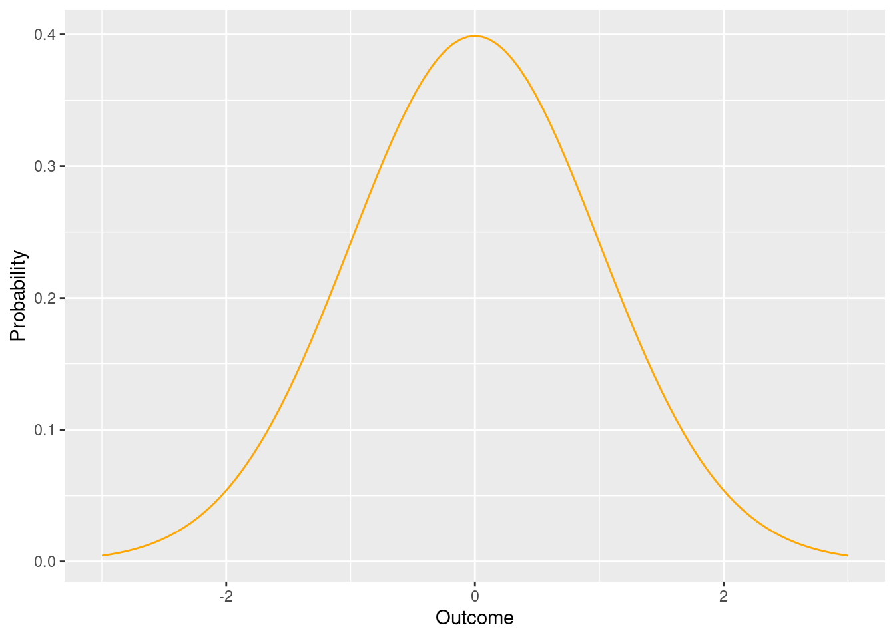
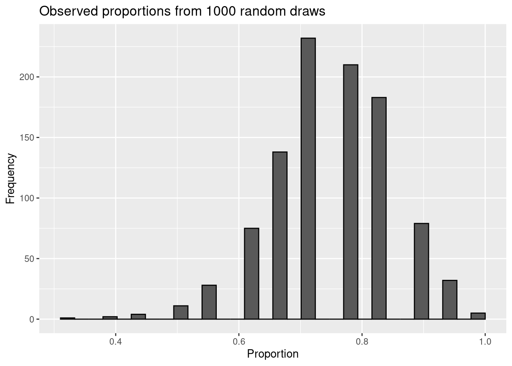
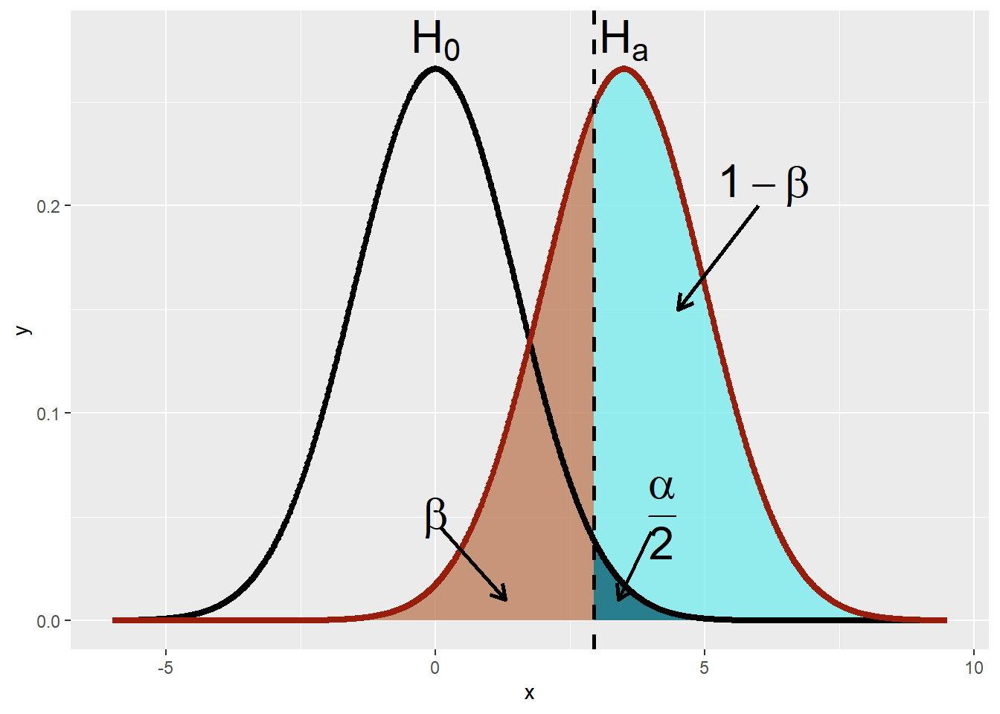
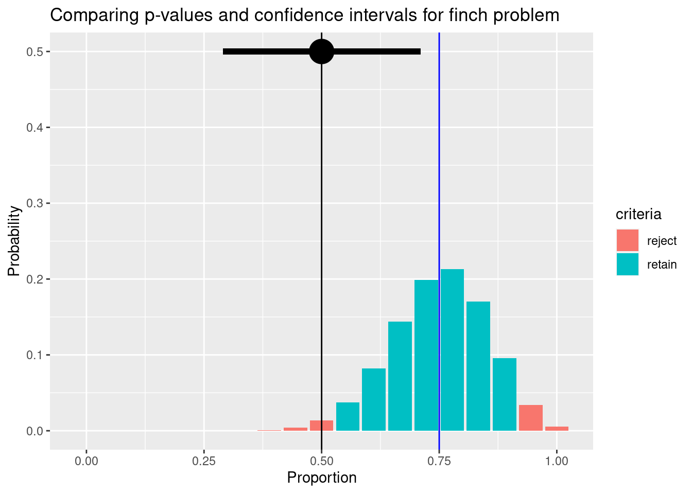

9/18[1] 0.5Where we meet the p-value!
In this chapter will build on our previous exploration of estimation by considering the world of hypothesis testing. These are different but related ideas, and we’ll end the section showing why. Along the way we will introduce the p-value. We will do all this while considering binomial tests, which are some of the simplest data we will see.
Let’s start with an example. Klem (Daniel Klem 1989) wanted to know if various factors (e.g., age, sex) of birds impacted the probability they would collide with glass windows. He collected data from several areas. In one of his samples, he found 18 purple finches collided with glass windows. 9 of these were in their hatching year (we’ll call them younger), and 9 were older. Is there any evidence that age impacts the probability of a purple finch colliding with the glass?

What have we done with data like this so far? You should know to calculate the proportion of each category impacting the probability of either category being represented in the sample. For example, since there were 9 older birds and 18 total, the proportion of older birds in the sample was:
9/18[1] 0.5We could also graph this, but it wouldn’t be very interesting:
library(ggplot2)
finch_data <- data.frame(age = c("younger", "older"), collisions = c(9,9))
ggplot(finch_data, aes (x=age, y = collisions))+
geom_col()+
labs(x="Age", y= "Collisions", title = "No apparent difference in sample based on age")
And although we haven’t discussed it, you should understand we could develop a confidence interval fr this type of data (we’ll do so below). That would tell us the range of proportions we might typically expect. But does that really answer the question of whether age impacts likelihood of colliding with glass?
To answer that question, we have to move to hypothesis testing. This approach focuses on if a given value we found in the data (we’ll call it a signal) is really different (or significantly different) from what we would expect to see for a a given set of circumstances given the sampling error we now know to expect when we sample.
The given set of circumstances are described by a null hypothesis (this is why this approach is sometimes called NHST, or null hypothesis significance testing). We often abbreviate this as Ho. Let’s start by comparing this to estimation. Given our data, we could develop a 95% confidence interval (theoretically) that you should now understand will capture the true signal of the data about 95% of the time (here we are using proportion as opposed to mean, but it works). That’s a slightly different approach than asking if the true mean is equal to a given number, which is what hypothesis testing asks. Both deal with sampling error and explain why we can’t simply say an estimate being different than a given value proves there is a difference (make sure you understand why!).
For hypothesis testing in general, we again generate a known population that we draw from multiple times (should sound familiar), but this time the population parameters are set by a null hypothesis. Then we compare the spread of signals from those multiple draws (which exist due to sampling error!) to what we actually observed to determine how likely our draw was given the null hypothesis was true. If it’s unlikley to have occured by chance under the null hypothesis, we consider that evidence the null hypothesis is not correct and (eventually) reject it.
You can typically think of a null hypothesis as a hypothesis of no difference, affect, or relationship. Let’s walk through this with our bird example, where our null hypothesis would state age (measured as a category here!) has no impact on collisions. Given that, what would we expect to see in our sample?
This is a tricky question (that I chose on purpose!). Many approaches to this question start with a 50/50 expectation (like flipping a coin), but I’ve found that confuses students into thinking that is always the answer. Instead, think about what we would expect to see if age had no impact on collisions. We would not necessarily expect a 50/50 split in older and younger birds because that may not be what the population looks like. In fact, previous research has suggested the population is split closer to 3:1, with 3 older birds for every younger bird. This means if age has no impact on collisions, we should see about (due to sampling error!) 3 older birds for every younger bird in our samples of birds that hit glass.
What did we actually see? We saw 5 old birds and 5 young birds. That is not a 3:1 split, but its also a small sample size. If we had a population with a 3:1 split and randomly selected 10 birds from it, how rare would it be to get 5 younger and 5 older birds? That’ (close) to what we are asking.
In this case, our null hypothesis is comparing our signal to a set value. This is common when we measure a single group and want to compare it to something. So our null hypothesis could be written as conceptually as age does not impact the probabilty a bird collides with glass. However, its often better (in order to connect it to tests!) to write it using numbers. In this case, we could write
\[ H_O: p=.75 \]
where p is the probability of a bird in our sample being old. Note we could instead focus on young birds and get:
\[
H_O: p=.25
\]
We also have alternative hypotheses (abbreviated HA)to accompany each of these. Our alternative is just the opposite of the null. Together, they encompass all the probability space. It is usually just as simple as switching signs. For example, if we focus on older birds, we get
\[ H_O: p=.75 \\ H_A: p \neq .75 \]
The above ideas stay the same for all NHST approaches! We always use the null hypothesis to generate a “known” population (sometimes called the null population, draw samples from it, and then compare it to what we actually observed. What changes based on data type is how we generate the sample and multiple draws.
This example focuses on data that only has 2 outcomes (young and old in our example). That is known as binomial data. For any type of data, we can simulate a distribution under the null hypothesis. For this example, we could put 4 pieces of paper in a hat, 3 labelled older and 1 labelled younger. We can then draw a sample of 18 (the number we actually observed) by drawing a piece of paper, writing down what it says, returning it to the hat, and repeating the process 9 more times to get single sample. For each sample, you could then calculate the observed proportion of older birds. You could visualize the spread of those results using a histogram. It’s important to realize this is doable without a computer (think it through), but it would take a lot of time because you need a lot of samples (we’ll come back to this).
For now, let’s do it with the computer. Let’s also take a shortcut: Instead of younger and older, let’s label the pieces of paper 0 and 1. We will also call the 0’s failures and the 1’s successes. Then we can sum the draws and divide by 10 to get the proportion of successes (make sure you understand why!). For now, let’s do a 1000 random draws of 18.
choices <- c(rep(0,1),rep(1,3))
number_of_draws <- 18
number_of_simulations <- 1000
sampling_experiment<- data.frame("observed_proportion" = rep(NA, number_of_simulations))
for(i in 1:number_of_simulations){
sampling_experiment$observed_proportion[i] = sum(sample(choices,number_of_draws, replace=T))/number_of_draws
}Let’ s take a look at the first few draw
head(sampling_experiment$observed_proportion)[1] 0.7222222 0.8888889 0.8888889 0.7777778 0.8333333 0.7222222Note we see some variation. Also note it is impossible to get a proportion of .75. Why? We only sampled 18 individuals, so we can’t get any outcomes that aren’t some form of a whole number less than 18 divided by 18. This seems simple, but it’s a reminder that your signal being different than your hypothesized value is not sufficient to reject the null hypothesis!
Now let’s plot the observed proportions:
ggplot(sampling_experiment,
aes(x=observed_proportion)) +
geom_histogram( fill="blue", color="black") +
labs(title="Observed proportions from 1000 random draws",
x= "Proportion",
y= "Frequency")`stat_bin()` using `bins = 30`. Pick better value with `binwidth`.
Just looking at this, it seems getting a proportion of .5 is unlikely. It only occurred 15 times. However, we also need to note how often more extreme outcomes occurred. Why?
More extreme values (the same or further distance away from the hypothesized value as our observed signal were) are also useful in considering if the null hypothesis is valid. When we move to continuous distributions, it’s also impossible to get a certain value (as mentioned in the probability section).
In this example, our observed proportion was .5. That’s .25 away from the value under the null hypothesis (.75), so we should all simulations that were . 5 or less or 1 or more. That only happened 24 times. So, in taking 1000 random draws from our null population, we only saw what we actually observed (or something more extreme) 0.024% of the time.
This is a p-value. Don’t get confused! We will get p-values from multiple tests, but the binomial distribution also has a p parameter (the proportion). They are not the same.
Explaining p-values is hard! You can see some statisticians try to explain the concept here.
A smaller p-value therefore means it is less likely to obtain your observed signal, or something more extreme, by chance when the null hypothesis is true. Traditionally, a p-value of less than .05 is thought to be sufficient evidence to reject the null hypothesis. This comparison value is sometimes called the \(\alpha\) (alpha) level. While we now often get specific p-values from software, historically people used tables to find ranges (less than .05, for example).
As shown above, we can always use simulations to obtain a p-value. However, without a computer (and even with) it’s cumbersome. We also have to redo it for every change (for example, what if our sample contained 19 instead of 18 birds?). Another option is to find an algorithm that can be used to calculate a distribution that is very close to what we saw with the simulation.
In the case of our binomial data, very close actually means exact. The binomial data is an example of data where we can fully describe the probability outcomes a sample may take. While not developed here, this means we use the binomial distribution to calculate our probabilities.
sum(dbinom(0:9,18,.75))+dbinom(18,18,.75)[1] 0.02498549This distributional assumptions powers the binomial test (also called the exact binomial test). In R, we can use the binom.test function to carry it, with the arguments
x=number of successes
n = total number of trials
p= expected proportion under the null hypothesis
binom.test(x=9, n=18, p=.75)
Exact binomial test
data: 9 and 18
number of successes = 9, number of trials = 18, p-value = 0.02499
alternative hypothesis: true probability of success is not equal to 0.75
95 percent confidence interval:
0.2601906 0.7398094
sample estimates:
probability of success
0.5 Note for this test the default value for p is .5 (equal chance), so if you don’t enter it that’s what will be used.
Notice all our p-values are fairly close. It should be noted the p-value obtained by simulation will vary slightly each time, while those obtained using the binomial distribution will stay the same.
Note our p-value is the probability we would get a signal like we observed by chance if the null hypothesis was true. This means for an \(\alpha\) of .05,we would expect to see something this extreme by chance 1 time out of 20! In other words, we can have errors. Think about it this way:
| Biological reality | |
Decision (based on analysis of sample data) |
HO True |
| Reject HO | Type I error (Probability of this is ɑ) |
| Do not reject HO | Correct (1- ɑ) |
\(\alpha\) sets the limit we are ok with for rejecting HO when it is true (a Type 1 error). Alternatively, a Type II error is when we do not reject HO even when it’s is false. Importantly, \(\alpha + beta \neq 1\)! Instead, \(\alpha + (1-\alpha)\) is the probability space for HO, and \(\beta + (1-\beta)\) (or \(\beta + power\)) is the probability space for HA. How they overlap depends on the signal, as the the distribution of signals under HA is close to what we already estimated for confidence intervals! You can visualize the relationship using the image below. Note the code is hidden given it’s length!
Warning: The `show_guide` argument of `layer()` is deprecated as of ggplot2 2.0.0.
ℹ Please use the `show.legend` argument instead.Warning: Using `size` aesthetic for lines was deprecated in ggplot2 3.4.0.
ℹ Please use `linewidth` instead.
The key point is the experimenter sets HO and \(\alpha\). Here we clearly see that in a typical test (like what we illustrated above) \(\alpha\) is split among the top and bottom of the distribution of signals under HO to create rejection regions. Note if we decrease \(\alpha\), which we can, we also decrease the power of the test! These issues come up in power analysis, which is way of using prior estimates of the distribution of signals to determine appropriate sample sizes needed to detect significant results. (Another form of power analysis occurs after a test is carried out, but this basically rehashing the p-value Levine and Ensom (2001) Heckman, Davis, and Crowson (2022).
This all points to a central idea of NHST. Larger sample sizes let you pick up smaller differences among groups! For example, we could see the same proportion (50%) of older birds in our sample, but if we only collected 8 individuals we would not be able to reject HO. Note,
binom.test(4,8,p=.75)
Exact binomial test
data: 4 and 8
number of successes = 4, number of trials = 8, p-value = 0.1138
alternative hypothesis: true probability of success is not equal to 0.75
95 percent confidence interval:
0.1570128 0.8429872
sample estimates:
probability of success
0.5 leads to a p-value which is >.05, so we fail to reject HO. Again, this relates to how sampling error interacts with sample size, much as we saw when constructing confidence intervals. This means we have to differentiate between statistical significance and importance.
This is one way estimates and NHST work together.Estimate focuses on the sample ( Given sampling error, where do we think true parameter lies?). Hypothesis testing focuses on the likelihood of the signal given the null distribution (how likely were we to observe data that we did, a la the p-value), but gives no information about the actual difference (which could be important for determining if something really matters!).
In introducing the p-value (and estimation) we focused on two-sided (or two-tailed) tests. This means we considered deviations from our value under the null hypothesis (for p-values) or via sampling error (for confidence intervals) based on their magnitude, and not direction. However, we can instead decide we want to consider differences to one “side” of our value of interest.
For example, Claramunt et al Claramunt, Hong, and Bravo (2022) wished to consider if roads impaired bird movement. To do they considered if banded birds were more likely to be recapture in one of 3 areas across a road from their original location or one of 6 on the same side on which they were captured. They were only interested if roads reduced bird movement, so they were justified in using a sided test. These tests move all the rejection region to one side. You can run these by adding an alternative argument to binom.test
binom.test(116,641, p=.33, alternative = "less")
Exact binomial test
data: 116 and 641
number of successes = 116, number of trials = 641, p-value < 2.2e-16
alternative hypothesis: true probability of success is less than 0.33
95 percent confidence interval:
0.0000000 0.2078378
sample estimates:
probability of success
0.1809672 Here we reject HO, where
\[ H_O: p>=.33 \\ H_A: p < .33 \]
However, sided or tailed tests should be rarely used? Why? Because it can be too tempting to use a sided test after observing the data! A signal that is not significant at the \(\alpha\) =.05 level using two-sided tests can be significant as a one-tailed test.
If you do use these, note they correspond to confidence bounds instead of intervals. Again, the full rejection region is placed on one side of the estimate.
Let’s return to our bird collision example and connect estimation and p-values (and teach you how to estimate confidence intervals for binomial data).
Remember, we found 9 older birds in our sample of 18. This means our estimate for the proportion of older birds 0.5. Just like for continuous data, we can consider sampling error in our estimate. This is actually a bit tricky,and many ways have been proposed to do this (Subedi and Issos 2019). Note, for example, the binom.confint function in the binom package gives 10 options, where
the first argument is the number of successes
the second argument is the number of trials
library(binom)
binom.confint(9,18) method x n mean lower upper
1 agresti-coull 9 18 0.5 0.2903102 0.7096898
2 asymptotic 9 18 0.5 0.2690160 0.7309840
3 bayes 9 18 0.5 0.2835712 0.7164288
4 cloglog 9 18 0.5 0.2592888 0.7005143
5 exact 9 18 0.5 0.2601906 0.7398094
6 logit 9 18 0.5 0.2841566 0.7158434
7 probit 9 18 0.5 0.2812976 0.7187024
8 profile 9 18 0.5 0.2808406 0.7191594
9 lrt 9 18 0.5 0.2808092 0.7191908
10 prop.test 9 18 0.5 0.2903102 0.7096898
11 wilson 9 18 0.5 0.2903102 0.7096898For now, we will use method labelled the Agresti-Coull method, which adjusts for slight bias in other estimates and is useful across sample sizes.
using_distribution <- dbinom(0:18,18,.75)
finches <- data.frame (Number = 0:18, Probability = using_distribution)
finches$Proportion <- finches$Number/18
finches$criteria <- "retain"
finches$criteria[pbinom(finches$Number, 18, .75) < .025] <- "reject"
finches$criteria[(1-pbinom(finches$Number, 18, .75)) < .025] <- "reject"
proportion_observed = data.frame(Proportion = 9/18, Probability = .3)
ggplot(finches, aes(x = Proportion, y = Probability)) +
geom_bar(stat="identity", aes(fill = criteria)) +
geom_segment(x = .29031, xend = .70968,y= .3 , yend =.3) +
geom_vline(xintercept = .75, color = "blue") + geom_vline(xintercept = 9/18, color = "black") +
geom_point(data= proportion_observed) +
ggtitle("Comparing p-values and confidence intervals for finch problem")
Note we see our rejection region in red; it also contains our estimate! Similarly, the 95% confidence interval for our estimate does not contain the paramater value under the null hypothesis!